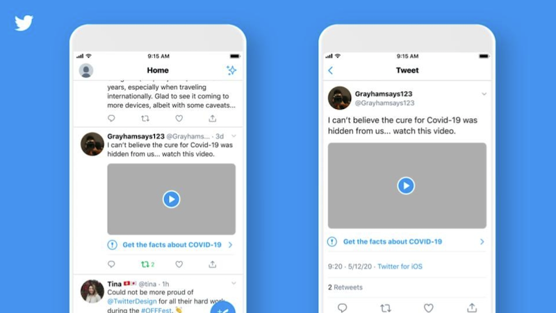

An example of a policy approach that I think is a step in the right direction concerning the spread of misinformation via social media is that of Twitter. Twitter officials state, “In serving the public conversation, our goal is to make it easy to find credible information on Twitter and to limit the spread of potentially harmful and misleading content” (Roth, Pickles, 2020). Their approach centers around disclaimer labels that they place on tweets that they conclude are potentially misleading or harmful misinformation. These labels alert users that the tweet contains possibly misleading information without censoring the tweet itself. Additionally, users cannot interact with the tweet by way of likes, retweets, or replies. Users can still view the tweet, but they will be essentially informed to take it with a grain of salt. In addition, Twitter has also put a policy in place to ban political ads for a short time as the US Presidential election plays out. The rules are, “No political content as they define it may be promoted; candidates, parties, governments or officials, PACs and certain political nonprofit groups are banned from promoting content altogether” (Coldewey, 2019). Again, Twitter blocks the spread of misinformation from paid political ads while not censoring the discussion of political content by users themselves. I think Twitter is taking the right steps toward mitigating the effects of misleading and harmful misinformation that is spread via social media